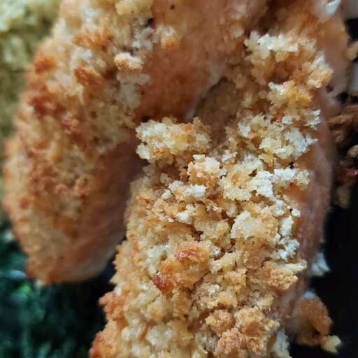

Baked Salmon Fillets Dijon

Learn how to bake salmon at 400 degrees Fahrenheit with this easy recipe for salmon fillets coated with Dijon-style mustard and seasoned bread crumbs drizzled with butter
Ingredients
- 4 ounces of fillets salmon
- 3 tablespoons of prepared Dijon-style mustard
- salt and ground black pepper
- a quarter cup of Italian-style dry bread crumbs
- a quarter cup of butter, melted
Steps
- Preheat the oven to 400 degrees F (200 degrees C). Line a shallow baking pan with aluminum foil.
- Place salmon filletsskin-side down on the prepared baking pan. Spread a thin layer of mustard on top of each fillet; season with salt and pepper. Top with bread crumbs, then drizzle with melted butter
- Bake in the preheated oven until salmon flakes easily with a fork, about 15 minutes.